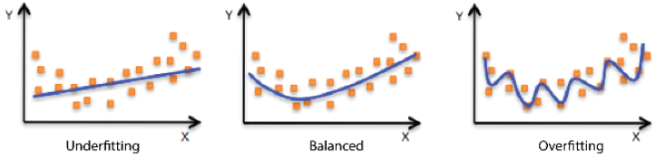
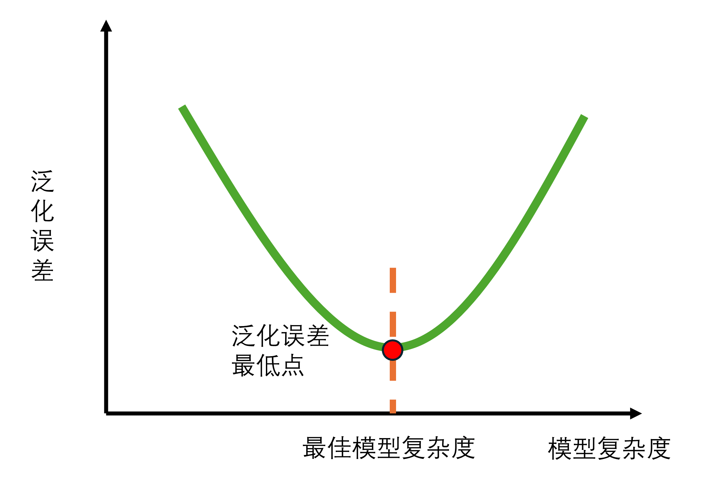

5 超参数调优
5.1 什么是超参数
有些模型的参数对模型最终的结果影响是非常大的，比如K最近邻模型中的K值，也就是近邻的数量，而且这种模型无法从数据中直接算出来，这一类模型参数被称为超参数（hyper-parameter）或者调优参数（tuning-parameter）。
下图是一个5-最近邻模型的展示。图中标出了需要预测的两个新样本点（实心点和实心三角），圆形的样本位于两个类的边界地带；5个近邻中有3个表明新样本点应属于第一类。另外一个三角形样本的所有5个近邻都表明应预测为第二类。我们应该选择K=3还是K=5呢？

类似于这样的参数就是超参数，不断尝试这些超参数值并找到最佳超参数的过程就被称为超参数调优。
5.2 调参方法
主要是3种：
- 学习曲线：适合只调整1个超参数
- 网格搜索：适合同时调整多个超参数
- 迭代搜索：复杂，强大，比如贝叶斯优化、模拟退火、遗传算法等
5.3 过拟合和欠拟合
不同的模型有不同的超参数需要调整，那么我们如何能快速找到最好的超参数？或者说初学者要怎么调整才能更好？
首先我们要明确，调参的目的是什么？通常都是为了提高模型的准确性。这个准确性，有很多具体的指标可以衡量，比如：AUC、敏感性、特异性、RMSE、R2等。
有了这个目标后我们就要考虑：哪些因素会影响模型的准确性？这就要了解一个叫泛化误差（genelization error）的概念。
我们先了解下模型的过拟合（over-fitting）和欠拟合（under-fitting）。
如下图所示，不同的点代表我们的样本，线条表示模型拟合线，左侧的图形是一个欠拟合的示例，模型并不能很好的拟合我们的样本；右侧的图形是过拟合的示例，模型拟合太过了；中间的图形表明模型拟合的刚好。

模型在新数据上的预测误差被称为泛化误差。我们建立模型之后肯定是要用模型对新数据（新数据指建立模型时未使用过的数据）做出预测的，泛化误差就是用来衡量模型对新数据的预测准确性的。
当模型在新数据（比如测试集数据或者袋外数据）上表现较差时，就是模型的泛化程度不够，泛化误差大，模型的效果不好。泛化误差受到模型的结构（复杂度）影响。看下面这张图，它展示了泛化误差与模型复杂度的关系，当模型太复杂，模型就会过拟合，泛化能力就不够，所以泛化误差大。当模型太简单，模型就会欠拟合，拟合能力就不够，所以误差也会大。

那模型的复杂度与我们的参数有什么关系呢？以基于树的模型为例进行说明。对树模型来说，树越茂盛，深度越深，枝叶越多，模型就越复杂。所以基于树模型就是容易过拟合的模型，比如随机森林、梯度提升树。所以基于树的模型在调参时，一般都是要减小模型复杂度，防止过拟合。
泛化误差、过拟合、欠拟合、模型复杂度其实是非常复杂的”偏差-方差”问题，我这里说的太简单了，大家入门之后可以自己阅读一些专业书籍加深理解。
5.4 参考资料
- 应用预测建模
- 周志华机器学习